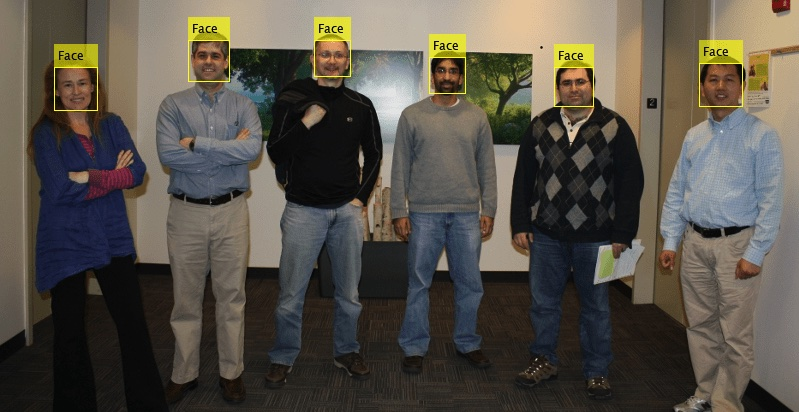
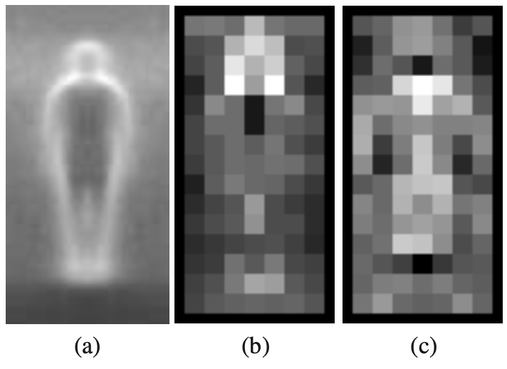

Sliding Window
Sliding window is a meta algorithm - a concept found in many machine learning algorithms.
Sliding Window
First, let’s assume our objects have relatively similar size and fit into \(n \times m\) pixel windows.
Sliding Window
Build the dataset of positive and negative instances and train the classifier.
We could then slide the classification window over the image to search for the object location.
Sliding Window
But, there are problems:
- Objects may be of significantly different sizes.
- Some windows will overlap - how do we avoid counting objects multiple times?
Sliding Window
We tackle the first problem by searching over scale as well.
- We build the Gaussian pyramid of our image.
Gaussian Pyramid
Each layer of a pyramid is obtained by smoothing a previous layer with a Gaussian filter and subsampling it.
 Gaussian Pyramid
Gaussian Pyramid
Gaussian Pyramid
We search using our \(n \times m\) window in each layer of the pyramid.
Sliding Window
The second problem is usually solved using non-maximum suppression.
Non-Maximum Suppression
Windows with a local maximum of classifier confidence suppress nearby windows.
Sliding Window
Train the classifier on \(n \times m\) windows.
Choose a threshold \(t\) and \(\Delta x\) and \(\Delta y\), where:
- \(t\) is a threshold for the classifier confidence.
- \(\Delta x\) and \(\Delta y\) are the step distance for each direction.
Sliding Window
Construct an Image Pyramid.
For each level:
- Apply the classifier to each \(n \times m\) window, stepping by \(\Delta x\) and \(\Delta y\) in this level to get a classifier confidence \(c\).
- If \(c\) is above \(t\), insert a pointer to the window into a list \(L\), ranked by \(c\).
Sliding Window
For each window \(w\) in \(L\), from highest confidence:
- remove all windows \(u \neq w\) that overlap \(w\) significantly
- overlap is calculated in the original image, by expanding coarser scales
Face Detection
We will mostly discuss the classic Viola-Jones algorithm for face detection.
Face Detection
Another classic method in face classification is Eigenfaces.
- Eigenfaces use PCA on an aligned set of face images.
- Fisherfaces extends Eigenfaces to use Fisher LDA.
- There is a document on Blackboard for you to read on these methods.
Viola-Jones object detection
P. Viola, and M. Jones,
Rapid Object Detection using a Boosted Cascade of Simple Features.
International Conference on Computer Vision and Pattern Recognition, pp. 511-518, 2001.
Viola-Jones object detection framework
A fast and robust method for face detection.
- Can be used for detection of other objects, not only faces.
- Robust - high detection rate and low false-positive rate.
- Detection only - not recognition.
Viola-Jones object detection framework
The method comprises four stages:
- feature detection
- integral image
- learning algorithm using modified AdaBoost
- cascade of classifiers
Viola-Jones Feature Learning
The number of features extracted from an image is very large.
- We need a way to select the subset of features, which are the most important from the point of object detection.
- We also need a fast classifier.
- Solution: modified AdaBoost.
Viola-Jones Feature Learning
Modified Adaboost algorithm.
- Each weak learner operates on only one feature.
- Thus, Adaboost acts as a feature selector.
- Can significantly reduce the initial number of 160,000 features.
- e.g. 200 features can provide 95% detection rate with 1 in 14000 false positives.
Viola-Jones Features
 Image from original paper
Image from original paper
Viola-Jones Learning
Attentional cascade of boosted classifiers.
We can train a simple boosted classifier on a very low number of features and adjust its threshold to guarantee 100% detection rate.
Viola-Jones Learning
Many false positives, but we can easily reject most sub-windows.
- Sub-windows classified as positives are passed to the next stage of the cascade.
- Additional features are used in a more complex classifier.
- …and so on, to reduce the number of false positives.
Viola-Jones Learning
Attentional cascade of boosted classifiers.
- 38 layers with 6061 features
- Majority of sub-windows will be rejected in the early layers of the cascade where few features are needed.
Viola-Jones Multiple Detections
The image is scanned with sub-windows at different scales and different locations.
- Results from individual sub-windows are combined for the final result.
- Detected sub-windows are divided into disjoint sets.
- In each disjoint set we calculate the mean of four corners.
Viola-Jones
MATLAB has an implementation of the algorithm.
Viola Jones Face Detection
Viola-Jones
Very slow to train. The original paper reports weeks of training for the training set they used (5k faces, 9.5k non-faces).
Very fast to execute. On 700 MHz processor, it takes 0.067s to analyse 384x288 image.
Detecting Humans
The original HOG paper also proposed detection of humans in the sliding window.
Detecting Humans
HOG - from original paper
Dalal and Triggs used a linear SVM classifier.
Detecting Humans
mean gradients and SVM weights
- The mean gradient image for all data.
- The maximum positive SVM weights.
- The maximum negative SVM weights.
The SVM weights provide a nice visualisation of the decision boundary.
Detecting Humans
hog test image
- An example 64×128 test image.
- The computed HOG descriptor.
Performance was reduced with less margin around the subject in the test images.
Detecting Humans
 hog weighted
hog weighted
- Positively weighted HOG descriptor.
- Negatively weighted HOG descriptor.
Showing that the detector cues mainly on the contrast of silhouette contours and gradients inside the person typically count as negative cues.
Detecting Boundaries
Object detection through segmentation using boundary detection.
Edges are not the same as object contours or occluding contours.
- Some edges are irrelevant or confusing for object detection.
- Solution: use a sliding window to detect boundaries.
Detecting Boundaries
At each window we extract features that will decide whether the centre pixel in the window is an occluding contour or not.
- Each pixel is assigned a probability of boundary.
- Circular windows often used as boundaries are oriented.
- A boundary splits the circular window into two halves.
Detecting Boundaries
Features could be histograms produced from image intensity, oriented energy, brightness gradient, colour gradient etc.
The histograms are extracted from two halves of the window, and the distance between them is calculated. E.g. \(\chi^2\)
This distance is mapped to probability using logistic regression.
Detecting Boundaries
Training and test data require annotations.
test image
Detecting Boundaries
Annotations are performed by different subjects.
 annotation 1
annotation 1
 annotation 2
annotation 2
Detecting Boundaries
Inconsistent annotations are averaged.
test image
Detecting Boundaries
\[ P_b(x, y, \theta) \]
The probability that the pixel is a boundary for some orientation.
\[ P_b(x, y) = \max(\theta) P_b(x, y, \theta) \]
The maximum probability that the pixel is a boundary for all orientations.
Detecting Boundaries
Solution: weighted matching between the machine and human generated boundaries.
- Predicted boundary point too far away from any annotation is considered a false positive.
- If there are no predicted points close to the annotation, then this pixel is considered a false negative.
- Probability boundary map can then be thresholded which allows us to calculate precision-recall curves.
Detecting Boundaries
precision-recall curve
GD+H - Canny
BG+CG+TG - Martin et al.
Ground Truth
Detecting Boundaries
results
Martin, Fowlkes and Malik. Learning to Detect Natural Image Boundaries Using Local Brightness, Color and Texture Cues (2004).